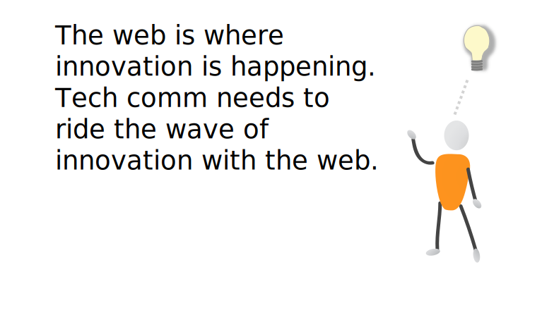
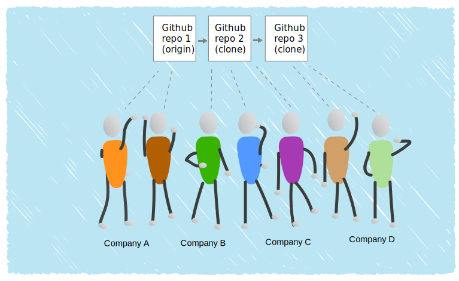
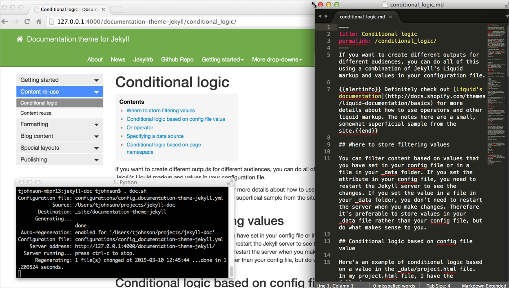
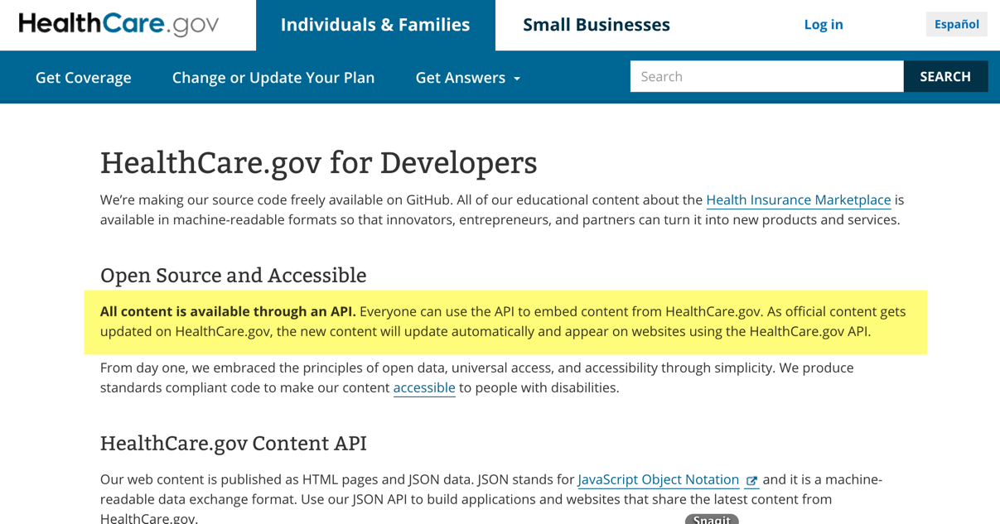
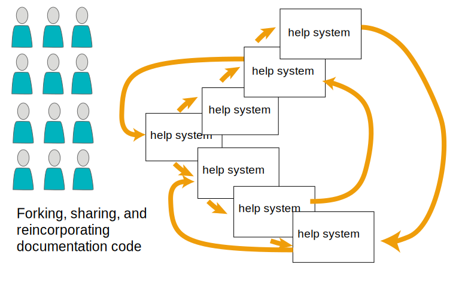

Innovation
in Technical Communication
tcworld India 2015
Created by Tom Johnson / @tomjohnson
Startup cultures encourage innovation

"As to what your journey says, I think it says that all the current models of tech comm development are deeply unsatisfactory in one way or another."
— Mark Baker, Every Page Is Page One
"Think Big Thursdays"

Story of telegraph and telephone

A framework for innovation

Survey of innovations
Innovations with technology
HTML5 • REST APIs • CSS media queries • oAuth • AJAX • instant search • SVG • augmented reality • Internet of Things • big data • social networks • YouTube • Bootstrap • static site generators • jQuery • YouTube • StackOverflow • Github • continuous integration • LESS & Sass • wikis
Innovations with ideas
decentralization • agile • crowdsourcing • gamification • Cluetrain Manifesto (user-to-user communication) • "Everything Is Miscellaneous" • The Long Tail • semantic web • information architecture • content marketing • transparency • simplicity of design • open source • social coding
Innovations in tech comm
information typing • minimalism • task-based documentation • topic-oriented documentation • DITA • DocOps • Every Page Is Page One • emotional language • personalization • interactive video • user-generated content • content strategy • single sourcing
Most significant innovation for TC?
Everyone is a technical writer

Unofficial technical writer

Job trends for "technical writer"

How to stay relevant?

Dilemmas with innovation
How long can you operate at a sub-performing level while you do research and development?
How can you switch models when you're mired in legacy content and systems?
How can you build anything if you're not really an engineer?
What happens to your career skillset when you invest in an obscure technology?
Pressure to conform to mainstream

So many limitations

XML and the web: Drifting apart?
JSON is standard

Technologies used by web developers

The turning point
The genius of Github and open source
Collaborate, version, distribute

Revolutionary for software development
"Github, in my humble opinion, is one of the most revolutionary things that has happened to software in 20 years."
— Joe Malin
"Social coding"

What if everyone's help were in an open Github repo?
Treating documentation as code
Writing documentation like a developer
| File format: | Text files |
| Authoring: | Text editor |
| Building: | Continuous build scripts |
| Collaborating: | Source control |
| Versioning: | Source control |
| Pushing live: | Terminal commands |
This slidedeck is just HTML5.
Here's the code for this slide:
<section>
<h3>This slidedeck is just HTML5.</h3>
<p>Here's the code for this slide:</p>
<p>Github repo: <a target="_blank" href="https://github.com/tomjohnson1492/innovation/">
https://github.com/tomjohnson1492/innovation/</a></p>
<p><i>So much more satisfying to work in text
file formats.</i></p>
</section>
Github: https://github.com/tomjohnson1492/innovation/
So much more satisfying to work in text-file formats.
Disruptive tech: Static site generators
Lightweight, flexible, no database

Static site generator characteristics
- Lightweight. No database — output is just static files.
- Fast. As static, pre-built files, pages load < 1 second.
- Usability. Write in Markdown. Add HTML or JS as needed.
- Flexibility. Complete control to define entire site.
- Secure. As static files, very secure.
- Suitable for hackers. Treat content just like code.
Jekyll is most popular

Live preview rebuilds with each save
Documentation theme I built on Jekyll

5 reasons why static site generators can be a disruptive technology
Reason 1: Snug fit into web technologies
HTML, JS, CSS

Bootstrap

jQuery

Markdown

UX talent will help when platform is web

Reason #2: Scale infinitely
Grow as needed without budget constraints
- Allow unlimited number of authors.
- No price per "seat."
- Avoid free-for-all content junkyard of wikis.
- Handle any type of content.
Allows everyone to be a tech writer

One person writing from one perspective in one company, especially an outsider to the actual business context of the user, can't possibly cover all the information needs for every user.
Reason #3: Content APIs
Growth in REST APIs

Healthcare.gov site as API
Why not create help content APIs?

Populate UI text dynamically from API

Reason #4: Push content into templates
Custom templates for custom content types

Iterate through items
{
"entries":
[
{% for page in site.tooltips %}
{
"id" : "{{ page.id }}",
"body": "{{ page.content | strip_newlines | replace: '\', '\\\\' |
replace: '"', '\\"' }}"
} {% unless forloop.last %},{% endunless %}
{% endfor %}
]
}
Reason #5: Leverage open source model
My larger point:
Maybe not Jekyll, but ...
Look outside the tech comm bubble
3 Strategies for innovation
- Look outside the tech comm bubble.
- Ride the innovation of the web.
- Share with the community around you.
Thanks!
Contact info
- Blog: idratherbewriting.com
- Twitter: @tomjohnson
- GitHub for slides: github.com/tomjohnson1492/innovation
- Github for Jekyll documentation theme: http://tomjohnson1492.github.io/documentation-theme-jekyll/
- Email: tomjohnson1492@gmail.com
Credits
- Read the innovation series on my blog, http://idratherbewriting.com/series/innovation-in-tech-comm/
- Slide framework from Reveal JS
- Some vectors come from Vecteezy.com
- Mark Baker quote, from comment thread at The genius of Github and its ability to transform tech comm
- Joe Malin quote, from The genius of Github and its ability to transform tech comm
- Theory of Disruptive Innovation, Clay Christiansen. The Innovator's Dilemma
- The graph of disruptive innovation. Pocket-sized Graph of the Theory of Disruptive Innovation
- Bell and an early model of the telephone, Wikipedia
- REST API Trends graph, Programmableweb.com
- Microsoft is very interesting again -- very, by Jason Calicanus. Linkedin
.jpg
){kind=link}